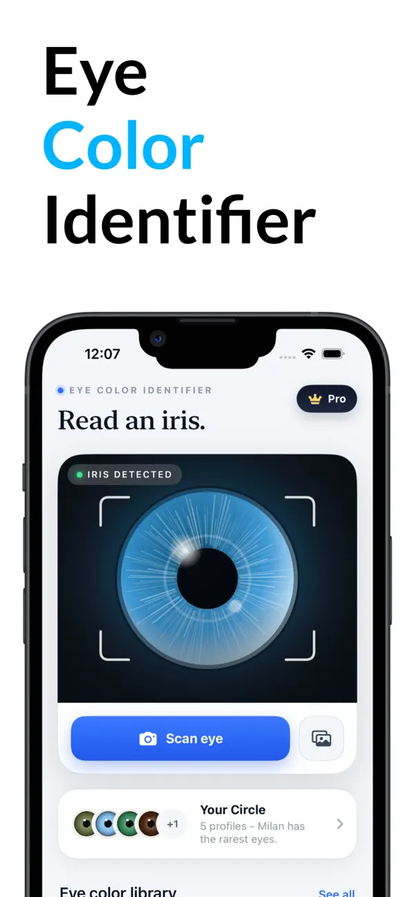
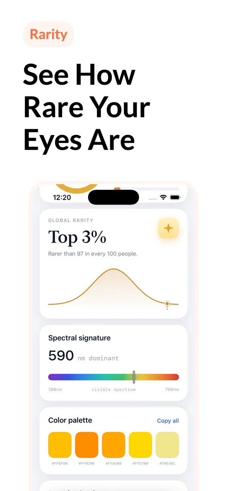
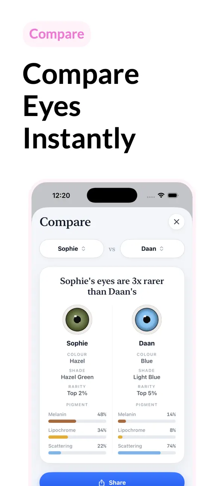
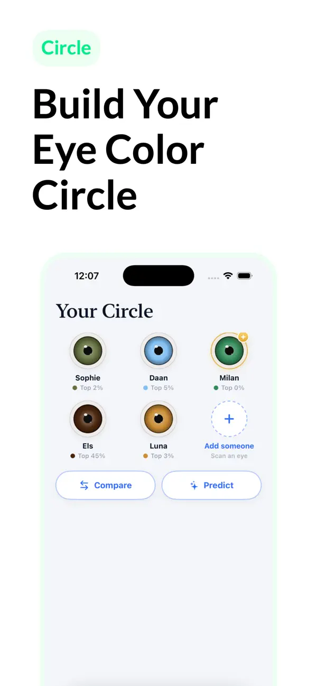
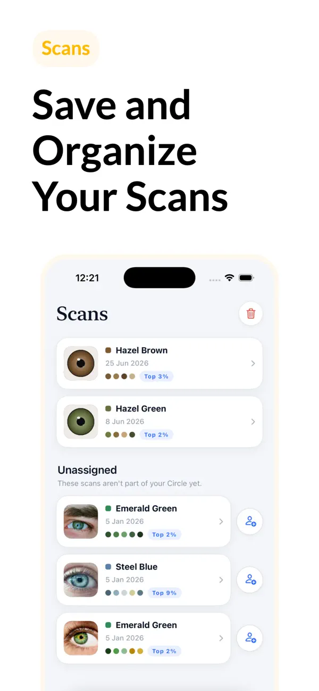
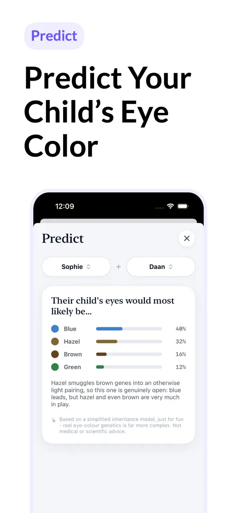

An exact answer, not a guess in the mirror
Mirrors, lighting, and opinions disagree. A scan does not. Here is what the app tells you that a mirror cannot.
Your precise shade name
Not just "brown-ish". The app names your closest shade, like Hazel Green or Steel Blue, with a confidence score and the pigment mix behind it: melanin, lipochrome, and light scattering.
A rarity score for your eyes
See where your color sits on the global distribution and how many people share it. Some shades belong to just a few people in every hundred.
Your whole family, compared
Save profiles for family and friends in your Circle, compare any two pairs of eyes side by side, and predict a child's likely eye color, just for fun.
How it works
From "I think they're green?" to a named shade in under a minute.
Scan your eye
Take a clear photo with the camera, or pick one from your library. The app finds and frames your iris automatically.
Get your analysis
See your exact shade name, a confidence score, your iris pigment composition, and a copyable color palette with hex values.
Explore and share
Check your rarity, save the scan to your journal, compare with family and friends, and share your eye color card.
See it in action
Real screens from Eye Color Identifier on iPhone.






Everything in the app
Built for anyone who has ever answered "sort of green, I think."
Instant eye scan
Automatic iris detection from your camera or photo library, with an accurate analysis in one tap.
Detailed color report
Shade name, pigment composition, spectral signature, and a copyable palette with exact hex values.
Global rarity ranking
A rarity percentage that shows how your eye color compares with people around the world.
Side-by-side compare
Pick two saved profiles and compare color, shade, rarity, and pigments in one view.
Child eye color predictor
A playful estimate of a child's likely eye color from two profiles, based on a simplified genetics model.
Scan history & sharing
Save every scan, track your color across lighting conditions, and share your eye color card with friends.
The eye colors of the world
Every iris mixes the same few ingredients: brown melanin, golden lipochrome, and blue light scattering. The mix decides your color. Estimated global shares below are rounded; see the full eye color chart for details.
Brown
High melanin, from light chestnut to nearly black.
Blue
Little melanin; the blue comes from scattered light.
Hazel
A shifting mix of brown, gold, and green zones.
Amber
Uniform golden or coppery color from lipochrome.
Green
Low melanin plus gold pigment plus scattered light.
Gray
Very little pigment and a denser iris structure.
Eye color, explained
Clear, factual guides to the questions people actually ask about eye color.
What color are my eyes? How to find out for sure
Why mirrors and friends disagree, and how to identify your exact eye color in good light.
Read the guide → RarityRare eye colors, ranked from uncommon to almost unique
Green, gray, amber, and heterochromia: which eye colors are genuinely rare, and why.
Read the guide → CompareHazel vs green eyes: how to tell the difference
The one visual test that separates hazel from green, plus why hazel eyes seem to change color.
Read the guide → ReferenceEye color chart: every shade and how common it is
All the main eye colors and their in-between shades, with estimated global percentages.
Read the guide → GeneticsWhat color eyes will my baby have?
How eye color inheritance really works, what parents' colors suggest, and why surprises happen.
Read the guide →Frequently asked questions
How does Eye Color Identifier work?
You take a clear photo of your eye, or pick one from your photo library. The app detects your iris, analyzes its colors, and names the closest matching shade, such as Hazel Green or Steel Blue. It also shows a pigment breakdown, a confidence score, and a color palette with exact color values.
Is Eye Color Identifier free?
Yes. The app is free to download on the App Store. An optional Pro upgrade is available inside the app.
Can I use an existing photo instead of taking a new one?
Yes. You can scan with the camera or pick any photo from your library. A sharp, well-lit photo taken in daylight gives the most accurate result.
Which eye colors can the app detect?
The app identifies brown, hazel, amber, green, blue, and gray eyes, including in-between shades like hazel green or steel blue. Each result comes with a shade name, pigment composition, and rarity estimate.
Why do my eyes look like a different color in some lighting?
Light blue, green, gray, and hazel eyes get much of their color from the way light scatters in the iris, so the perceived color shifts with lighting, clothing, and surroundings. The scan history in the app lets you compare results across different lighting conditions.
Can the app predict my baby's eye color?
The Predict feature estimates the likely eye colors of a child from two saved profiles using a simplified inheritance model. It is meant for fun. Real eye color genetics involves many genes, so no app or calculator can predict a baby's eye color with certainty.
Is Eye Color Identifier a medical app?
No. Eye Color Identifier is a lifestyle app for exploring eye color. It does not diagnose eye conditions and does not replace advice from an eye care professional. If you notice a sudden change in your eye color, see an eye doctor.